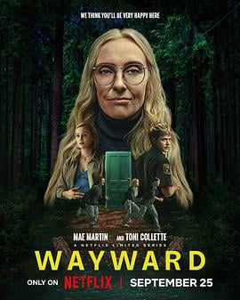

6.5
幽镇异校
Wayward
2025
加拿大
评分 6.5
导演:
尤洛斯·林 / 约翰·福西特 / Renuka Jeyapalan / 梅·马丁
演员:
梅·马丁 / 托妮·科莱特 / 莎拉·加顿 / 帕特里克·J·亚当斯 / 阿利维亚·阿林·林德 / 布兰顿·杰·麦克拉伦
类型:
剧情,惊悚
剧情简介
在风景如画却隐藏玄机的塔尔松镇（Tall Pines），新警官亚历克斯·登普西（梅·马丁 饰）带着孕妻劳拉（莎拉·加顿 饰）一道搬迁至此，希望开启平静的新生活。但他们很快发现，镇上的“问题少年学院”——塔尔松学院（Tall Pines Academy）远比外界所见可怕。两名青春叛逆少女莉拉（阿利维亚·阿林·林德 饰）与艾比（Sydney Topliffe 饰）在逃离这所学院后，与亚历克斯联手，逐步揭开小镇深埋已久的黑暗秘密。 学院墙内，看似“疗愈”式的训练、红圈的隔离房、心理游戏与药物交织；墙外，镇民口中异常稀少的儿童踪迹、深林中的小屋、夜里湖畔的倒影，一切都昭示着这是一个被控制与迷失的地方。亚历克斯在调查中愈发察觉：这里不仅仅是学校，更像一场操控人心的仪式。 莉拉与艾比在逃跑途中面临友情撕裂、身份迷茫、青春反叛，她们在夜间密林中奔逃，在冷水淋浴室里呆坐，在旧日合影与涂鸦中追忆失落的自我。与此同时，亚历克斯家中的秘密也逐渐浮现——劳拉曾是学院的学生，而丈夫的到来触动了学院根基。 《幽镇异校》通过顿挫的节奏、森林深处的静默、少女间微妙的情感爆发与成人世界里的操控暗流，展现“叛逆青春 ×系统裂隙”的双重张力。故事中的每个镜头仿佛在问：当你“被救”还是“被囚”，你还有多少选择。